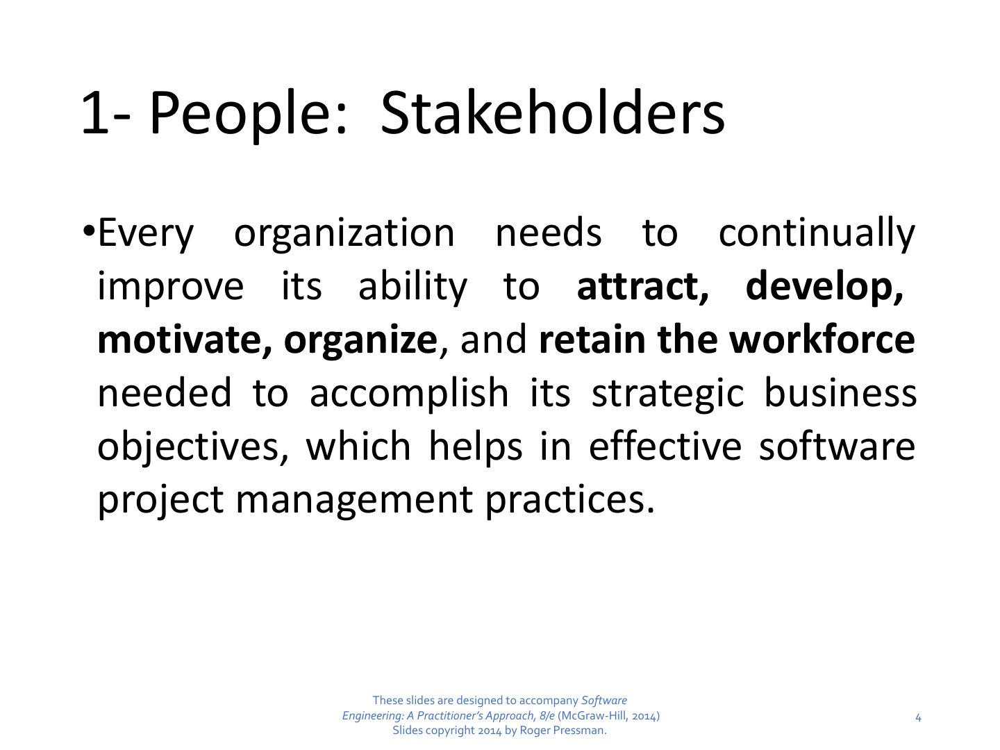
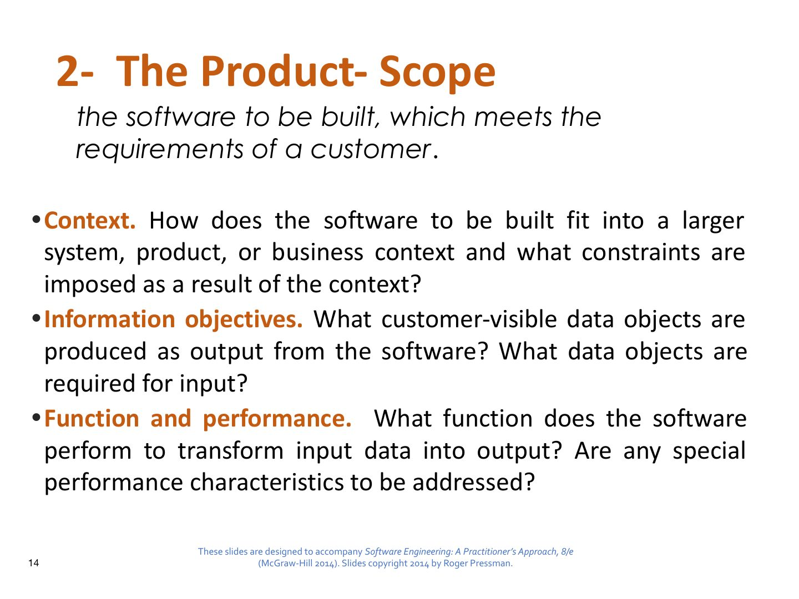
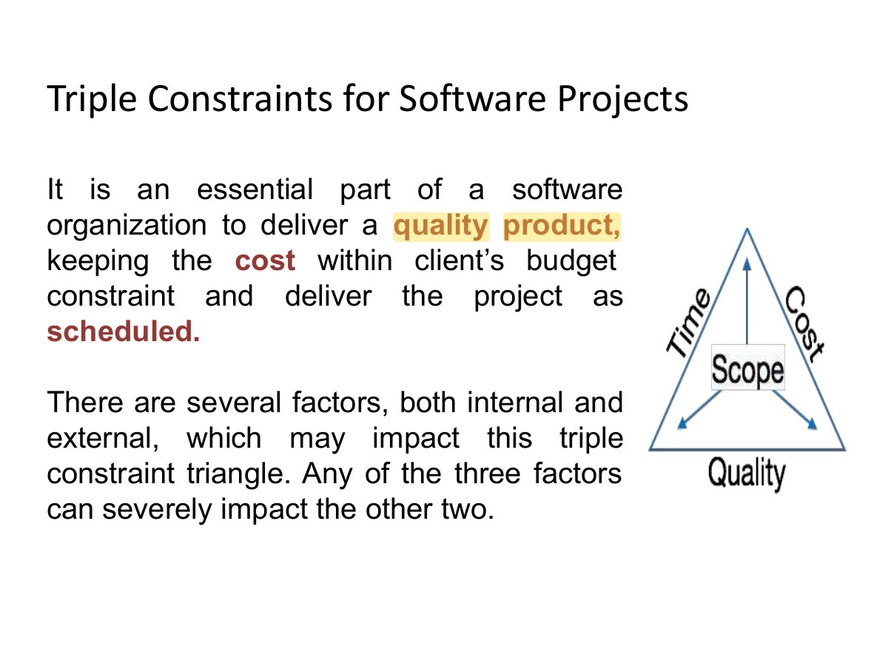
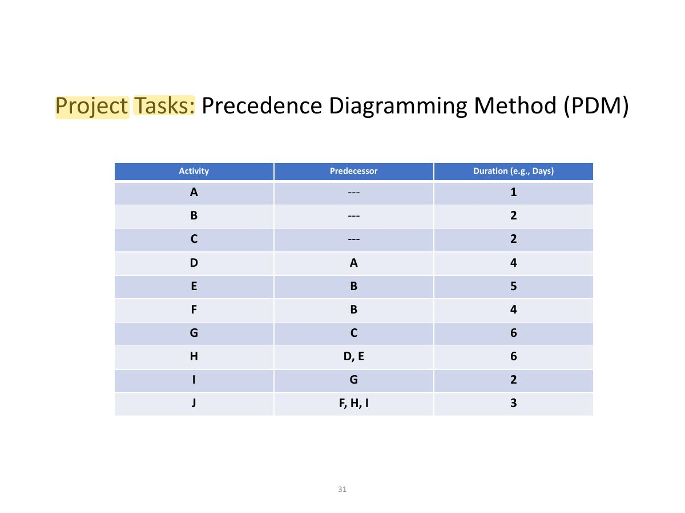
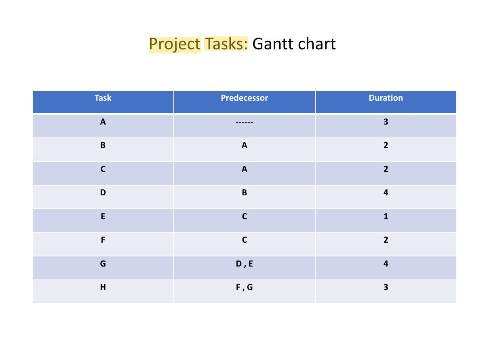

The triple constraint consists of:
Software Project Management
The 4 Ps (people, product, process, project), stakeholders, team leaders and team structures, scope and problem decomposition, signs of project risk, the triple constraint, estimation and scheduling, precedence (activity-on-node) diagrams, the critical path and float, Gantt charts, and risk management.
How to read this page
Every original slide is shown unchanged. Yellow marks on a slide point to a numbered note: hover or tap a mark to jump to its note, and hover a note to see its marks. Questions tagged Past exam appeared on a real paper; Prediction questions are likely angles, not confirmed. Pick an answer to each question: a wrong pick tells you why it is wrong, so you can try again.
All 79 slides
- 1 Slide 1
- 2 Course Learning Outcome
- 3 Project Management Spectrum
- 4 1- People: Stakeholders
- 5 1- People: Stakeholders
- 6 1- People: Team Leader
- 7 1- People: Team Leader
- 8 1- People: Software Teams
- 9 1- People: Software Teams
- 10 1- People: Agile Teams
- 11 1- People: Agile Teams
- 12 1- People: Team Coordination & Communication
- 13 1- People: Team Coordination & Communication
- 14 2- The Product- Scope
- 15 2- The Product- Scope
- 16 2- The Product: Problem Decomposition
- 17 2- The Product: Problem Decomposition
- 18 3- Process
- 19 3- Process: Melding the Problem and the Process
- 20 20
- 21 4- Signs of Projects Risk
- 22 4- Common-Sense Approach for Projects to Avoid problem
- 23 4- To Get to the Essence of a Project using W5HH
- 24 Part II
- 25 Triple Constraints for Software Projects
- 26 Project Estimation - Scheduling
- 27 0 Project Goal
- 28 Project Estimation - Scheduling
- 29 Project Estimation - Scheduling
- 30 Example
- 31 Project Tasks: Precedence Diagramming Method (PDM)
- 32 Project Tasks: Precedence Diagramming Method (PDM)
- 33 Project Tasks: Precedence Diagramming Method (PDM)
- 34 Project Tasks: Precedence Diagramming Method (PDM)
- 35 Project Tasks: Precedence Diagramming Method (PDM)
- 36 Project Tasks: Precedence Diagramming Method (PDM)
- 37 Project Tasks: Precedence Diagramming Method (PDM)
- 38 Project Tasks: Precedence Diagramming Method (PDM)
- 39 Project Tasks: Precedence Diagramming Method (PDM)
- 40 Project Tasks: Precedence Diagramming Method (PDM)
- 41 Project Tasks: Precedence Diagramming Method (PDM)
- 42 Project Tasks: Precedence Diagramming Method (PDM)
- 43 Project Tasks: Precedence Diagramming Method (PDM)
- 44 Project Tasks: Precedence Diagramming Method (PDM)
- 45 Project Tasks: Precedence Diagramming Method (PDM)
- 46 Project Tasks: Precedence Diagramming Method (PDM)
- 47 Project Tasks: Precedence Diagramming Method (PDM)
- 48 Project Tasks: Precedence Diagramming Method (PDM)
- 49 Project Tasks: Precedence Diagramming Method (PDM)
- 50 Project Tasks: Precedence Diagramming Method (PDM)
- 51 Project Tasks: Precedence Diagramming Method (PDM)
- 52 Project Tasks: Precedence Diagramming Method (PDM)
- 53 Project Tasks: Precedence Diagramming Method (PDM)
- 54 Project Tasks: Precedence Diagramming Method (PDM)
- 55 Project Tasks: Precedence Diagramming Method (PDM)
- 56 Project Tasks: Precedence Diagramming Method (PDM)
- 57 Project Tasks: Precedence Diagramming Method (PDM)
- 58 Project Tasks: Precedence Diagramming Method (PDM)
- 59 Project Tasks: Precedence Diagramming Method (PDM)
- 60 Project Tasks: Precedence Diagramming Method (PDM)
- 61 Project Tasks: Precedence Diagramming Method (PDM)
- 62 Project Tasks: Gantt chart
- 63 Project Tasks: Gantt chart
- 64 th October 2023
- 65 Slide 65
- 66 Topics
- 67 Risk Management
- 68 Risk Classification
- 69 Examples of project, product, and business risks
- 70 The Risk Management Process
- 71 The Risk Management Process
- 72 Risk Identification
- 73 Examples of Different Risk Types
- 74 Risk Analysis
- 75 probability and effects
- 76 Risk Examples with probability and effects
- 77 Risk Planning
- 78 Risk Monitoring
- 79 Risk indicators
1- People: Stakeholders

Notes
-
Stakeholders: senior managers, project managers, practitioners, customers, end users.
2- The Product- Scope

Notes
-
Scope: context, information objectives, function and performance. Bounded before estimation.
Triple Constraints for Software Projects

Notes
-
Triple constraint: scope, time, cost (quality in the middle); change one and the others move.
Exam angle
Project Tasks: Precedence Diagramming Method (PDM)

Notes
-
Precedence diagram (activity on node): ES/EF from the forward pass, LS/LF from the backward pass; slack (float) = LS − ES.
-
Tip Forward pass: EF = ES + duration, ES = max(EF of predecessors). Backward pass: LS = LF − duration, LF = min(LS of successors). Critical path = activities with zero float.
Exam angle
The critical path is the:
Activity A (3 days) → B (4 days) and A → C (2 days); B and C → D (1 day). Find the project length and the critical path.
Compare with the model answer
A–B–D = 3 + 4 + 1 = 8 days; A–C–D = 6 days. Project length 8 days; critical path A–B–D; C has 2 days of float.
Project Tasks: Gantt chart

Notes
-
Gantt chart: bars on a calendar show each task’s duration and timing.
Risk Management
Notes
-
Risk = an event that may adversely affect the project. Categories: project, product, business risks.
Exam angle
Staff turnover is mainly a:
The Risk Management Process
Exam angle
Correct order of the risk-management process: